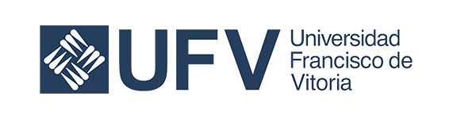

Prácticas en la Clínica de Nutrición Anáhuac
Desde el Prácticum I, en 5º semestre, atiendes pacientes reales bajo supervisión docente, dentro de nuestra propia clínica universitaria.
Ver el plan de estudiosCiencias de la Salud
Nutre. Previene. Transforma.
¿Es para ti?
Si te reconoces en lo siguiente, la Nutrición puede ser tu lugar.
Te interesa descubrir cómo la alimentación puede transformar la salud y el bienestar.
Te gusta la ciencia y quieres aplicarla para entender la relación entre alimentación y salud.
Te motiva acompañar a las personas en el camino hacia hábitos más saludables.
Te gustaría crear tu propio consultorio, proyecto o emprendimiento relacionado con la nutrición.
En la Anáhuac te formamos como un profesional de la salud que previene, evalúa, diagnostica y trata el estado de nutrición de las personas y de la población.
¿Por qué la Anáhuac?
No solo aprendes teoría de la nutrición: atiendes pacientes reales, evalúas su estado nutricional y diseñas soluciones, con acompañamiento de expertos.
Desde el Prácticum I, en 5º semestre, atiendes pacientes reales bajo supervisión docente, dentro de nuestra propia clínica universitaria.
Ver el plan de estudiosEvalúa el estado nutricional con tecnología como bioimpedancia y Bod Pod, no solo con báscula y cinta métrica.
Programa con acreditación CONCAPREN y pertenencia a la AMMFEN (Asociación Mexicana de Miembros de Facultades y Escuelas de Nutrición).
Compartes materias, como Anatomía, con otras licenciaturas de la Facultad. Tu Clínica de Nutrición trabaja de forma coordinada con las otras tres clínicas internas —Odontología, Terapia Física y Servicio Médico— para que colabores en la atención de un mismo paciente desde distintas disciplinas.
Cursas Emprendimiento e innovación en 7º semestre. No es solo teoría: hay egresados de Nutrición Anáhuac que hoy combinan su propio consultorio con proyectos de desarrollo de productos alimentarios.
Suma una experiencia internacional mediante convenios con universidades extranjeras, con posibilidad de doble titulación.
Prepárate para ser el nutriólogo que quieres ser y la persona que quieres llegar a ser. Nuestro Modelo Anáhuac integra tu carrera en tres bloques —Profesional, Anáhuac e Interdisciplinario— para que desarrolles una visión integral y estés listo para ejercer, liderar y transformar tu entorno. Tendrás además acceso a espacios pensados para Nutrición dentro del futuro Hospital Virtual, un edificio de simulación de 5 pisos hoy en construcción.
Perfil de egreso
8 Semestres académicos (4 años)
398 Créditos totales
+1 Más un Año de servicio social (periodos 9 y 10)
Plan de estudios
Periodo de servicio social supervisado, con acompañamiento de un tutor.
Periodo de servicio social supervisado, con acompañamiento de un tutor.
El corazón de tu carrera. Aquí desarrollas las competencias de la profesión, atiendes pacientes en tus tres Prácticum y sigues la ruta de liderazgo y emprendimiento. Además eliges tus Minors —diplomas profesionales universitarios— que amplían tu perfil y te dan versatilidad para el mundo laboral.
El sello que nos distingue. Un espacio de autoconocimiento, ética y sentido de vida que te forma como persona íntegra y como líder de acción positiva, consciente de su vocación y de su impacto en los demás.
Sales de tu carrera para entender el mundo real. Cursas asignaturas de otras disciplinas y conectas saberes que hoy el entorno profesional exige integrados, ampliando tu visión más allá de tu área de estudio.
Campo laboral
Tu formación te abre oportunidades en diferentes áreas de la salud, la alimentación y el bienestar.
Cuentas con convenios de vinculación empresarial con Nestlé, Danone y Herdez para prácticas profesionales y proyectos de investigación y desarrollo de producto. Es la puerta a un campo laboral que va mucho más allá del consultorio.
En la Red Anáhuac, el 70% de nuestros egresados se emplea al poco tiempo de graduarse (Top 10 de América Latina en el QS Graduate Employability Ranking).
Instalaciones y campus
La licenciatura es presencial y se imparte en nuestros dos campus. Elige el que mejor te quede: los dos comparten la misma comunidad y experiencia Anáhuac.
Av. Universidad Anáhuac 46, Lomas Anáhuac, Huixquilucan, Estado de México.
Conoce el campusAv. de los Tanques 865, Torres de Potrero, Álvaro Obregón, Ciudad de México.
Conoce el campusLeones Anáhuac que han transformado sus vidas con nosotros
Docencia y colaboradores
Aprendes de profesores con experiencia clínica y académica, y practicas en un entorno respaldado por una amplia red de convenios de la Facultad de Ciencias de la Salud.
[Cargo o logro profesional — pendiente]
[Cargo o logro profesional — pendiente]
[Cargo o logro profesional — pendiente]
[Cargo o logro profesional — pendiente]
[Cargo o logro profesional — pendiente]
[Cargo o logro profesional — pendiente]

EspañaLa Facultad de Ciencias de la Salud cuenta con más de 350 campos clínicos y convenios con más de 53 hospitales en 8 estados de la República.
Siguiente paso
Avanza a tu ritmo: explora costos y apoyos, revisa fechas, inicia tu admisión o habla con un asesor.
Calcula la inversión de tu licenciatura y conoce las opciones de pago.
CotizarComienza tu proceso 100% en línea en solo 6 pasos.
EmpezarConsulta el calendario de exámenes de admisión a lo largo del año.
ConsultarDescubre las becas y apoyos económicos disponibles para estudiar aquí.
Ver apoyosResuelve tus dudas con un asesor preuniversitario, por campus.
ContactarPreguntas frecuentes
El plan académico de la Licenciatura en Nutrición dura 8 semestres, es decir, 4 años, en modalidad presencial. Al terminarlo, realizas un año de servicio social con acompañamiento de un tutor, requisito para obtener tu título.
Cursarás materias como Nutriología, Bioquímica de la nutrición, Dietoterapia, Nutrigenómica y metabolómica, Nutrición poblacional y Políticas públicas en alimentación, entre otras, organizadas semestre por semestre.
Sí. Desde el 5º semestre atiendes pacientes reales, supervisado por docentes, en la Clínica de Nutrición Anáhuac, a través de los Prácticum I, II y III.
Sí. Después de tus 8 semestres académicos realizas un año de servicio social con acompañamiento de un tutor, en un hospital, clínica o institución afín. Ese año cuenta como experiencia laboral formal para tu CV y, si lo decides, puedes cursarlo en paralelo con el primer año de un posgrado dentro de la misma universidad.
Puedes ejercer en hospitales, clínicas y consultorio propio, empresas de alimentos, instituciones deportivas, escuelas, organismos públicos de salud y proyectos de investigación y desarrollo de productos.
En Campus Norte (Huixquilucan, Edo. de México) y Campus Sur (Álvaro Obregón, CDMX), ambos en modalidad presencial.
Puedes calcular tu colegiatura y conocer opciones de beca en nuestro cotizador.
Mucho más que solo una Universidad.
Conoce por qué vivirás una experiencia universitaria única con nosotros.
Conoce la experiencia AnáhuacDesarrolla las habilidades, conocimientos y experiencia que necesitas para construir un perfil integral. Nuestro modelo educativo integra formación profesional, intelectual, humana, social y espiritual.
Amplía tu experiencia con intercambios, convenios y opciones académicas que amplían tu perspectiva y enriquecen tu formación dentro y fuera del aula.

Haz deporte, participa en actividades culturales, involúcrate en proyectos sociales y forma parte de una comunidad activa.
Disfruta de espacios creados para tu desarrollo integral: deportes, salud, innovación y recursos únicos que encontrarás en la Universidad Anáhuac.

Solicita información
Cuéntanos qué te interesa y te enviaremos el material directamente a tu correo o WhatsApp. No recibirás la llamada de un asesor; si prefieres hablar con alguien, escríbenos desde «Elige el siguiente paso».